Tricotin
Nomes, palavras e formatos personalizados para decorar cantinhos especiais.
Um cantinho para você encontrar inspirações em tricotin, amigurumis, peças para maternidade e personalizados feitos especialmente para momentos importantes.
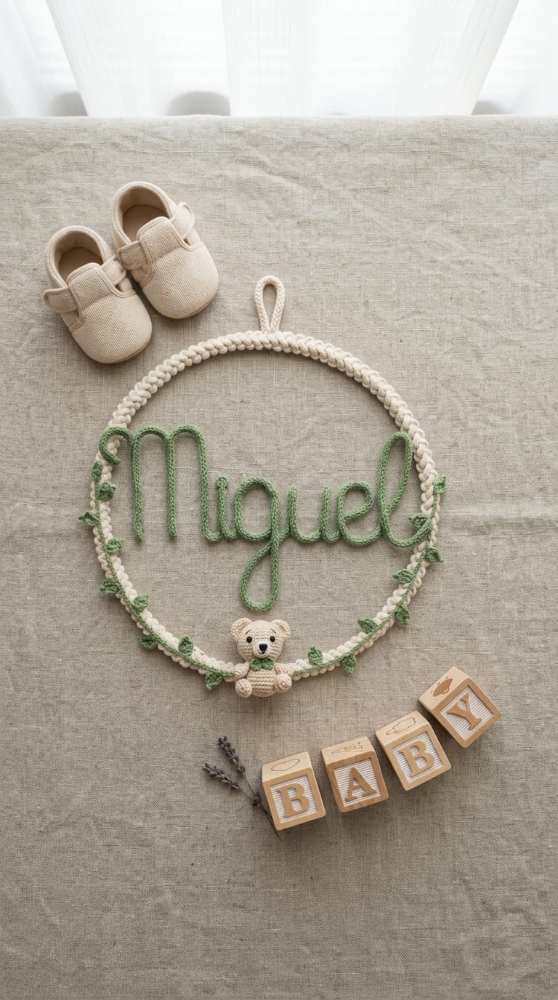
As peças do Tricotin da Lu são pensadas para transformar ambientes e momentos em lembranças que podem ser guardadas para sempre.
Inspire-se e imagine como uma peça poderia fazer parte da sua história.
Nomes, palavras e formatos personalizados para decorar cantinhos especiais.
Peças delicadas para celebrar uma nova chegada.
Bichinhos e personagens feitos à mão para presentear ou decorar.
Peças pensadas para quartos, aniversários e momentos especiais.
Conheça alguns dos trabalhos do Tricotin da Lu.
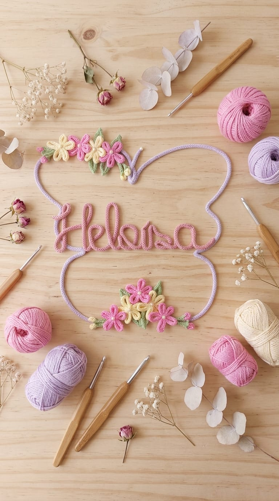
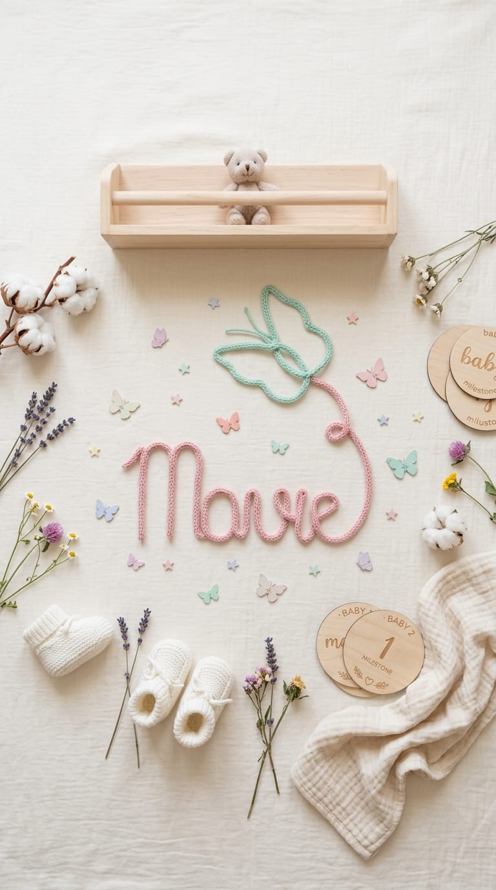
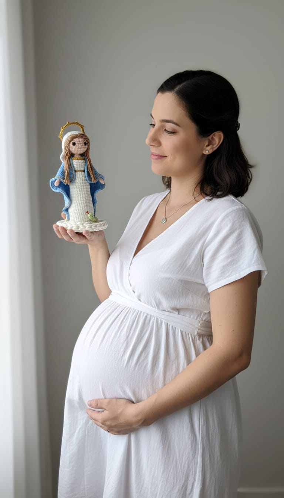
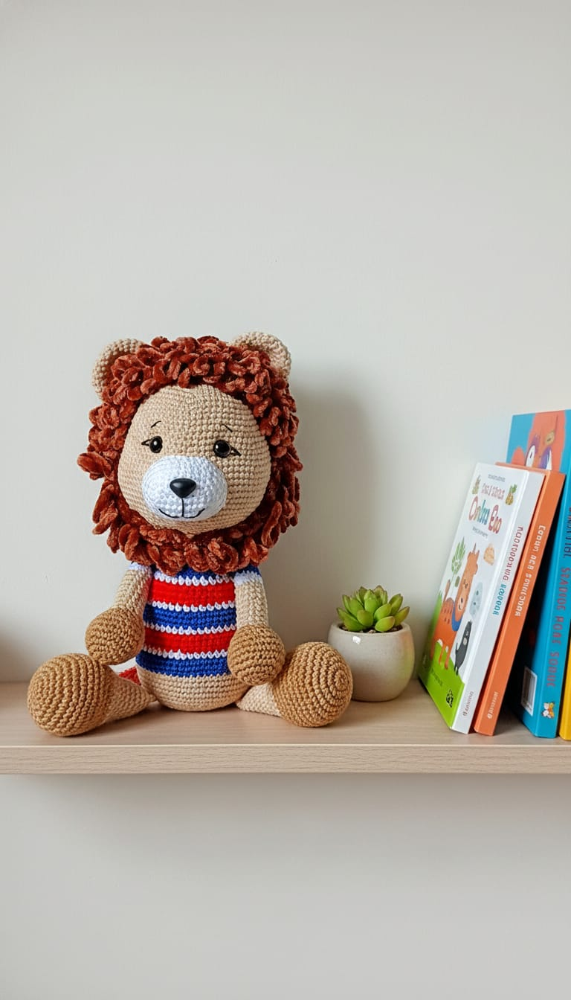
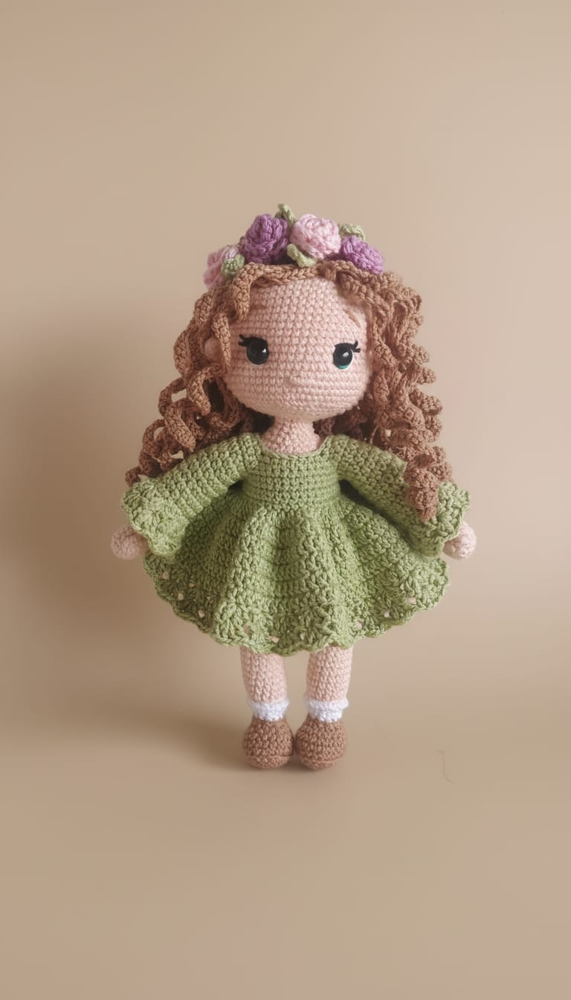
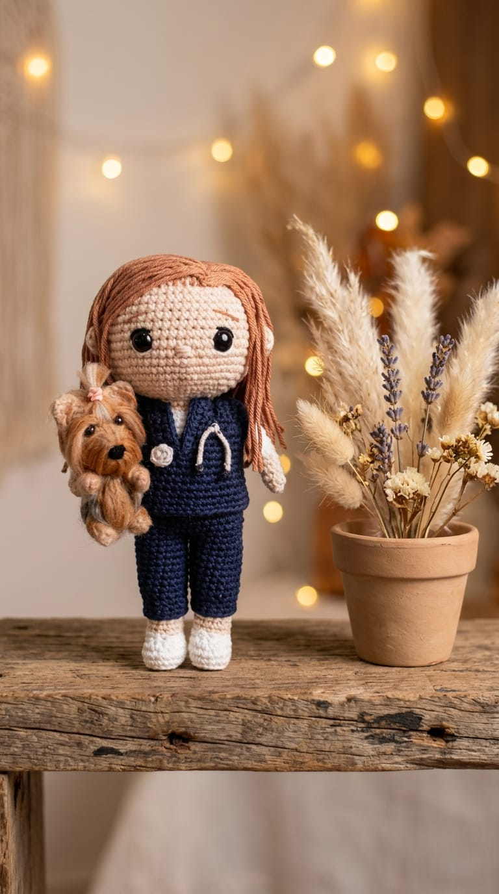
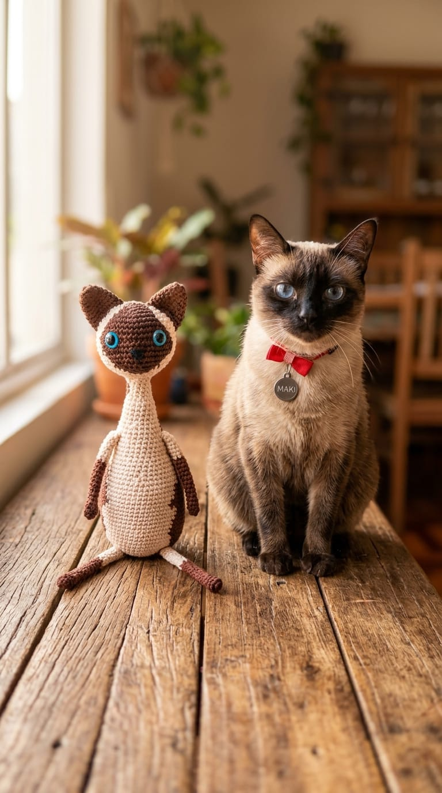
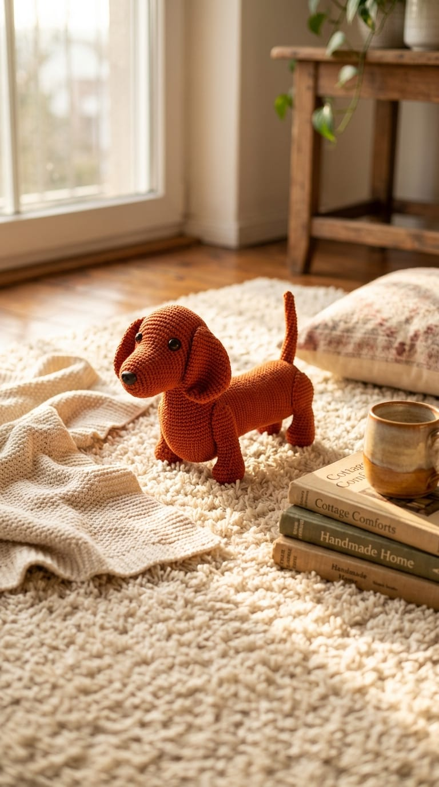
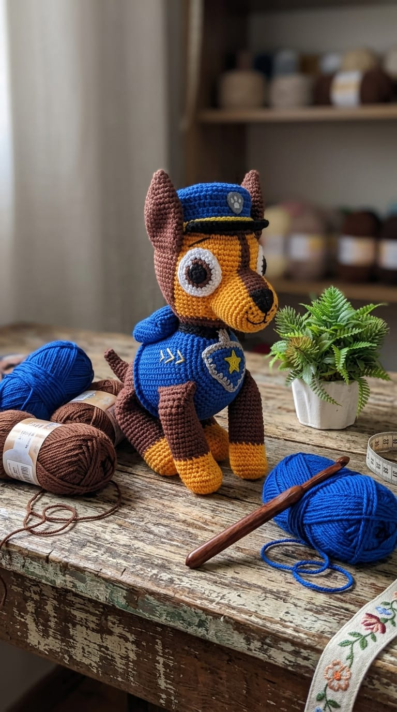
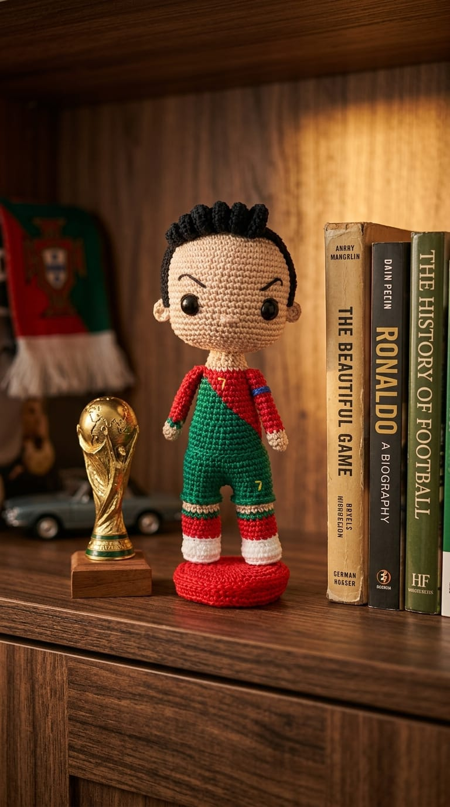
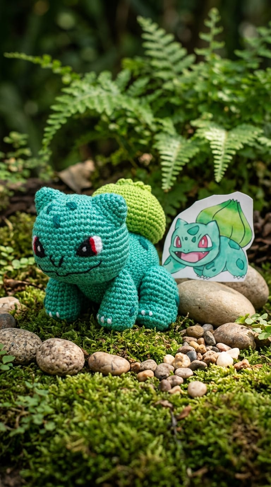
Que cada cantinho tenha um detalhe que conte uma história.Tricotin da Lu
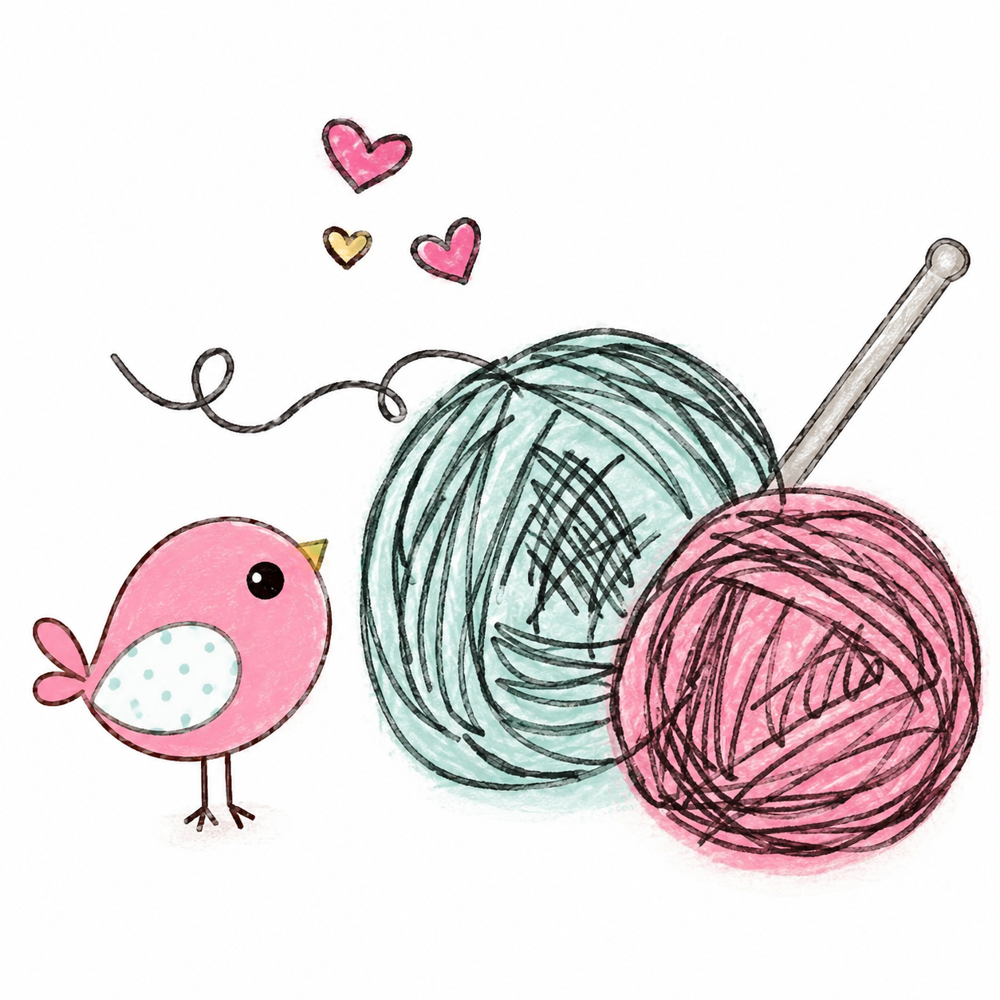
O Tricotin da Lu nasceu do carinho por criar peças que fazem parte de momentos que merecem ser lembrados.
Cada detalhe é produzido artesanalmente, pensando nas cores, no nome, no ambiente e principalmente na história de quem vai receber aquela peça.
Mais do que decoração, são pequenos detalhes feitos para acompanhar grandes momentos.
Me conte o que você está imaginando. Podemos conversar sobre cores, nomes, formatos e todos os detalhes da sua peça.